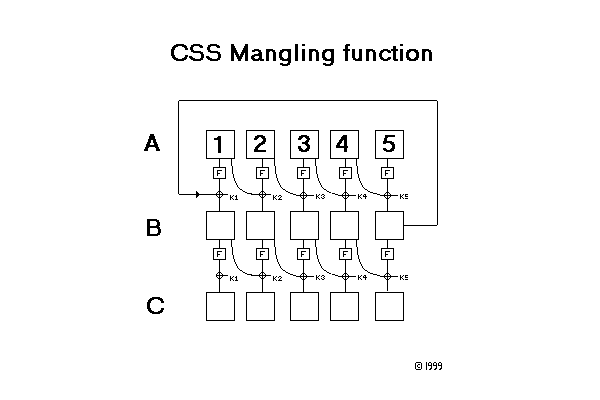

Cryptanalysis of Contents Scrambling System,
Frank A. Stevenson ( frank@funcom.com )
Abstract: CSS is a scrambling system used in the distribution
for movies on DVD ( Digital Versatile Disc ) a high capacity CD like storage
system. Its main purpose is to prevent the unauthorized duplication of
disc contents. This is achieved through encrypting the files, and storing
keys in hardware. Here we will describe the system, and show that even
if the keys can be securely stored in hardware, the data will not be protected
from unauthorized copying. Severe weaknesses in the ciphers effectively
voids the need for the hardware keys when decrypting the content.
8th November 1999
(updated 13th Nov.)
This information is provided as is, with no warranties on its accuracy or usability. It is based on a piece of source code claiming to be the css algorithms, and which have since been confirmed to interoperate with the CSS system. The author has not read any official CSS documentation, and any errors in the terminology is a result of this. This information has not to the knowledge of the author been made available through breaches of the DVD consortium Non Disclosure Agreement.
1 System overview.
Every DVD player is equipped with a small set of player keys. When presented with a new disc, the player will attempt to decrypt the contents with the set of keys it possesses. Every disk has a disk key data block that is organized as follows:2 CSS streamcipher primitive:Suppose the player has a valid key for slot 213, it will calculate
- 5 bytes hash of decrypted disk key ( hash )
- disk key encrypted with player key 1 (dk1 )
- disk key encrypted with player key 2 (dk2 )
- ...
- disk key encrypted with player key 409 (dk409)
(1) Kd = DA( dk213 , Kp213 )To verify that Kd is correct, the following check is done, if the check fails, it will try the next player key.
(2) Kd = DA( hash , Kd )An obvious weakness stems from this check, by trying all 240 possible Kd, disk key can be deduced without knowing any valid player key. As will be shown later, this attack can be carried out with a complexity of 225, making such an attack feasible in runtime applications. Another obvious attack is that by having 1 working player key, other player keys can be derived through a similar search. This can be done offline, also keys obtained from the former attack can be used as a starting point.
To decrypt the contents an additional key tk - the title key is decrypted with the now decrypted and verified disk key.
(3) Kt = DB( tk, Kd)
Each sector of the data files is the optionally encrypted by a key that is derived from Kt by exclusive or of specified bytes from the unencrypted first 128 bytes of the 2048 bytes sector. The decryption is done with the CSS stream cipher primitive described in section II.
The CSS streamcipher is a very simplistic one, based on 2 LFSRs being added together to produce output bytes. There is no truncation, both LFSR are clocked 8 times for every byte output, and there are 4 ways of combining the output of the LFSRs to an output byte. These four modes are just settings on 2 inverter switches, and the modes operation are used for the following purposes.3 CSS mangling step:LFSR1: 17 bits ? taps, and is initialized by the 2 first bytes of key, and setting the most significant bit to 1 to prevent null cycling.
- Authentication to DVD drive ( not discussed )
- Decryption of Disk key (DA)
- Decryption of Title key (DB)
- Decryption of data blocks.
LFSR2: 25 bits 4 taps, is initialized with byte 3,4,5 of the key shifting all but the 3 least significant bits up 1 position, and setting bit 4 to prevent null cycling.As new bits are clocked into the LFSRs, the same bits are clocked in with reversed order to the two LFSRs output bytes. ( With optional inversion of bits. )
The output of LFSR1 is O1(1), O1(2), O1(3) ...
Likewise LFSR2 produces O2(1), O2(2), O2(3) ...These two streams are combined through 8 bits addition with carry carried over to the next output. The carry bit is zero at start of stream.
(4) O(i) = O1(i) + O2(i) + c where c is carry bit from O(i-1)This streamcipher is very weak, a trivial 216 attack is possible with output bytes known for i = {1,2,3,4,5,6}. Guess the initial state of LFSR1, and clock out 4 bytes. O2(1), O2(2), O2(3), O2(4) can then be uniquely determined, and from them the state at i=4 is fully known. The guess on LFSR1 can then be verified by clocking out 2 or more bytes of the cipher and comparing the result.
Another important attack is the case when only O(i) for i = {1,2,3,4,5} is known. Guess the initial state of LFSR1, and clock out 3 bytes. Now O2(1), O2(2) and O2(3) can be found as in the above attack. This will reveal all but the most significant bit of LFSR2s state at i=3. If both possible settings for MSB is tried, and LFSR2 is clocked backwards 24 steps, a state where bit 4 is set at i=1 can always be found. ( This is stated without proof ). Select the setting of the most significant bit for LFSR2 such that LFSR2 is in a legal state at i=1, and clock out two more bytes to verify the guess of LFSR1. For some values of O( i = {1,2,3,4,5} ) multiple start states can be found, and for others none. Selecting the correct start state is not a problem, as this attack is used in situations where only the first five output bytes are of significance ( encryption of keys ).
When the CSS streamcipher is used to encrypt keys such as in DA(data,key) and DB(data,key), an additional mangling step is performed on the data. This cipher is best illustrated with the following block diagram:The cipher is evaluated top down, with exceptions indicated by an arrow.
- A(1,2,3,4,5) are the input bytes (data)
- C(1,2,3,4,5) are the output bytes (data)
- ki = O(i) where O(i={1,2,3,4,5}) is streamcipher output from key
- B(1,2,3,4,5) are temporary stages

4 Attacking the hash of the disk key.
Examples of evaluating cipher:F is a function, defined by a byte permutation table. With known cipher and plaintext, the whole cipher unravels with a minimal amount of work. Here is how:
- B(j) = xor( F( A(j) ) , A(j-1) , kj ) for j = {2,3,4,5}
- B(1) = xor ( F( A(1)) , B(5), k1 )
- C(j) = xor( F( B(j) ) , B(j-1) , kj ) for j = {2,3,4,5}
- C(1) = xor ( F( B(1)) , k1 )
Thus by trying 256 possibilities, we can recover 5 output bytes from the CSS streamcipher, and so recover the key by using the five known output bytes. This attack can be put to immediate use for recovering other player keys as in the notes to eqn. 2,3. Even if the player key is not recovered through the reversal of the stream cipher, the output of the streamcipher is known, and will still be usefull for decrypting disks that employ other player keys.
- Make a guess on k5
- B(5) = xor( F( A(5) ) , A(4) , k5 )
- B(4) = xor( F( B(5) ) , C(5), k5 )
- k4 = xor( F( A(4) ) , A(3) , B(4) )
- B(3) = xor( F( B(4) ) , C(4), k4 )
- k3 = xor( F( A(3) ) , A(2) , B(3) )
- B(2) = xor( F( B(3) ) , C(3), k3 )
- k2 = xor( F( A(2) ) , A(1) , B(2) )
- B(1) = xor( F( B(2) ) , C(2), k2 )
- k1 = xor( F( A(1) ) , B(5) , B(1) )
- verify by checking C(1) = xor ( F( B(1) , k1 )
Reversing the hash at the start of the disc key block is somewhat more complicated. From (2) we see that only the hash value is known, the problem is finding a disk key such that the decrypted hash equals the disk key itself. An attack of complexity 225 proceeds as follows.5 ConclusionFirst some aspects on the value of k2 will have to be considered. A(1) and A(2) is known, and a table can be build by running through every possible combination of k2 and B(1) and calculate the resulting C(2). When trying to build a table of possible values k2 of indexed by C(2) and B(1) there will be many values that map to the same set of indices, so a the table must be able to hold several values of k2 in each location.
Guess the start state of LFSR1, calculate O1( i = {1,2,3,4,5} ) . Next guess B(1) and complete the following calculations:
This attack when implemented on a Pentium III running 450 MHz, will recover a disk key from the hash alone in less than 18 seconds. This is clearly much less than what is to be expected of a 40 bits cipher.
- k1 = xor( F( B( 1 ) ) , C(1) ) C(1,2) is known, they are the start state of LFSR1
- B(5) = xor( F( A(1) ) , B(1), k1)
- k5 = xor( F( A(5) ) , A(4), B(5) )
- Through the table indexed by C(2) and B(1) all permissible k2 can be found, there can be from 0-8 , on average 1. For all permissible k2 calculate:
- O2(1) , O2(2), and 2 possible O2(5). This is possible since k1,2,5 are found.
- For every legal initial state of LFSR2 there exists a one to one mapping to O2(1,2,5) , by generating a table with 224 entries the start state of LFSR2 can be found. Thus C(1,2,3,4,5) is potentially known.
- B(4) = xor( F( B(5) ) , C(5), k5 )
- k4 = xor( F( A(4) ) , A(3) , B(4) )
- B(3) = xor( F( B(4) ) , C(4), k4 )
- k3 = xor( F( A(3) ) , A(2) , B(3) )
- B(2) = xor( F( B(3) ) , C(3), k3 )
- verify k2 = xor( F( A(2) ) , A(1) , B(2) ) , this holds for 1 / 256 tries ( 217 altogether ) and if the test holds, the key C(1,2,3,4,5) can be tested by eqn. (2). If eqn (2) holds, then a key has been found that will satisfy the hash. From experience it is possible to find from zero to a few such keys to any given hash value. When multiple disc keys are found trial decryption of the files will eliminate the false keys.
The author has through email correspondence learned that attacks as described at (2) have indeed been carried out by brute force prior to this analysis. CSS was designed with a 40 bit keylength to comply with US government export regulation, and as such it easily compromised through brute force attacks ( such are the intentions of export control ). Moreover the 40 bits have not been put to good use, as the ciphers succumb to attacks with much lower computational work than which is permitted in the export control rules. Whether CSS is a serious cryptographic cipher is debatable. It has been clearly been demonstrated that its strength does not match the keylength. If the cipher was intended to get security by remaining secret, this is yet another testament to the fact that security through obscurity is an unworkable principle.6 Further information
I have collected links to posts that were made to the Livid project mailing list. These include the original anonymous posting of the CSS algorithm, as well as full C source code for the attacks I outline here.